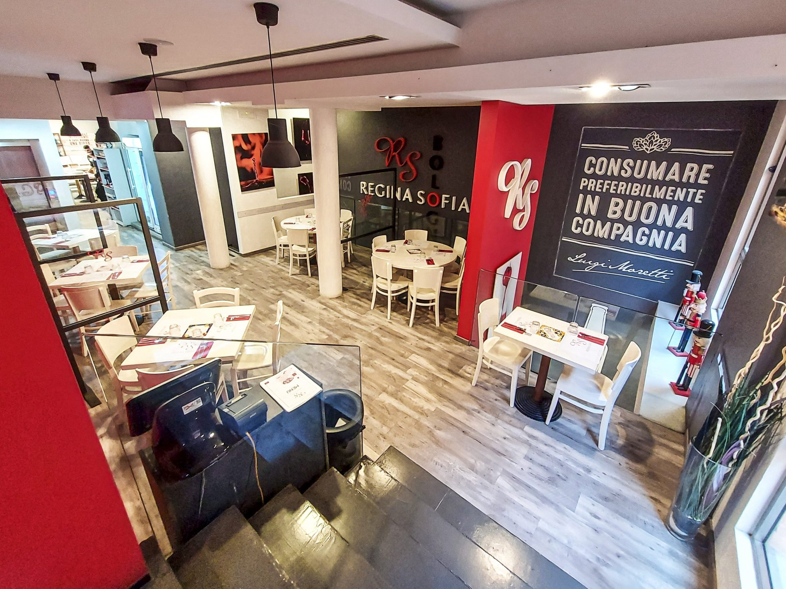
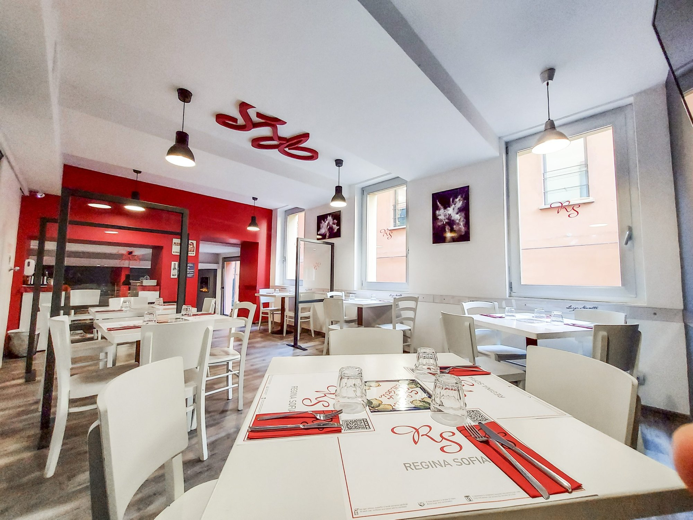

RISTORANTE & PIZZERIA · BOLOGNA
Un’anima napoletana.
Un cuore bolognese.
Il calore del Sud, la bellezza dello stare insieme.
La vera tradizione campana, nel cuore di Bologna.
DALLA NOSTRA CUCINA
A tavola, come al Sud.
Ricette che raccontano la nostra terra.
Ingredienti scelti, gesti autentici e un pizzico di amore.

Una tavola di emozioni.
IL NOME DI UNA DIVA, L’ANIMA DI UNA FAMIGLIA
Benvenuti a casa.
Benvenuti da Regina Sofia.
Tutto comincia da un incontro con Sophia Loren nel nostro ristorante di famiglia. Il suo sorriso e la sua ironia ispirarono un sogno: creare un tempio della pizza che portasse il suo nome.
Quel sogno oggi vive a Bologna. Siamo giovani imprenditori del Sud, innamorati dei sapori della Campania e del Cilento. Portiamo in tavola le nostre radici, con la voglia di farti sentire parte della famiglia.
IL PIACERE DELLA TAVOLA, DA CONDIVIDERE
Il gusto non esclude nessuno.
Un’area dedicata alla preparazione senza glutine delle nostre pizze e dei nostri piatti. La stessa passione, un’attenzione in più.
Per esigenze alimentari specifiche, parla con il nostro personale.CI VEDIAMO IN CENTRO
Il tuo posto,
nel cuore di Bologna.
Vieni a trovarci
Via Clavature 1/c · Via de’ Musei, 9
Bologna
Ogni giorno, insieme
Lunedì – Domenica · 12:00 – 23:30
Parliamone
IL TUO RISTORANTE, SEMPRE CON TE
Regina Sofia, anche in app.
Il menù, i tuoi preferiti e un filo diretto con noi.